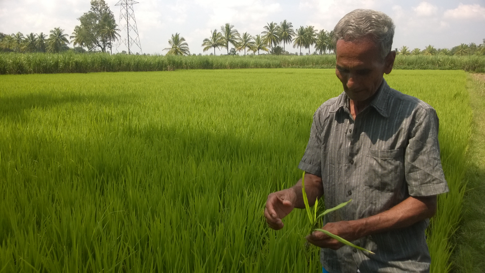

Bharatada Organic Connection
A multilingual marketplace for organic farmers and buyers across India.

KrushiSetu empowers small farmers by giving them a platform to sell their organic produce at fair prices. With support for regional languages and chat translation, communication is seamless between buyers and farmers.